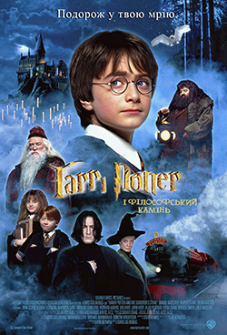

Славута Ольга
Чому обрала фронтенд
- Зацікавленість
- Візуалізація роботи
- Відносно не складний напрямок
Коротко про себе
Привіт! Мене звати Оля і мені 27 років. Я офіцер Збройних Сил України, а ще я мама чудового хлопця)
Чого очікую від курсу
Від курсу я очікую отримати багато структурованого матеріалу, напрактикувати кодописання, вивчити адаптивне верстання сайтів, а також дізнатися нові тенденціі у світі Web розробки.
My favorite movies
-
«Пан Ніхто́», або «Містер Ніхто» (англ. Mr. Nobody) — науково-фантастична драма режисера Жако Ван Дормеля. Фільм вийшов у світ у 2009 році. У фільмі використано багато наукових елементів, зокрема теорія Великого вибуху, теорія струн, поняття паралельних часових вимірів, численні біологічні факти. Подібно до фільму «Загадкова історія Бенджаміна Баттона», через призму причинно-наслідкових зв'язків тут розкривається вирішальна роль однієї миті в житті людини.
-
Богемна рапсодія (англ. Bohemian Rhapsody) — американо-британський біографічний фільм 2018 року про гурт «Queen», що розповідає про співака Фредді Мерк'юрі, роль якого зіграв Рамі Малек. У Великій Британії фільм вийшов 24 жовтня 2018 року, в США 2 листопада, а в Україні — 1 листопада. Фільм отримав змішані відгуки від критиків: критикувалась режисура та історичні неточності, але акторство Малека отримало одностайну похвалу.
-
Гаррі Поттер — це британсько-американська серія фільмів на основі творів про Гаррі Поттера такої письменниці, як Джоан Роулінг. Серія складається з восьми фентезійних фільмів, починаючи з Гаррі Поттера та Філософського каменю (2001 р.) й закінчуючи Гаррі Поттер і Смертельні реліквії: Частина 2 (2011 р.). Спін-оф серії будуть складатися з п'яти фільмів, починаючи з Фантастичні звірі і де їх шукати (2016 р).
